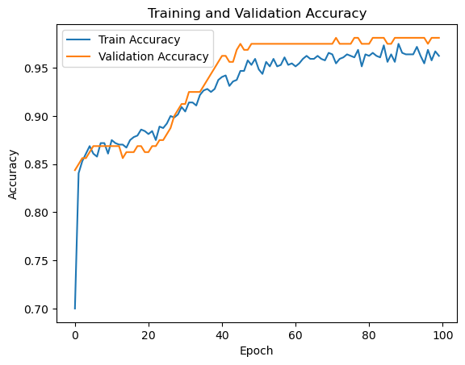

Demonstration#
Step 1 — Import Libraries#
import numpy as np
import tensorflow as tf
from tensorflow.keras.models import Sequential
from tensorflow.keras.layers import Dense, Dropout
from tensorflow.keras.optimizers import Adam, RMSprop
from sklearn.model_selection import train_test_split
from sklearn.datasets import make_moons
from sklearn.preprocessing import StandardScaler
from sklearn.metrics import accuracy_score
Step 2 — Create and Preprocess Data#
We’ll generate a simple non-linear dataset (make_moons) to visualize how FNN learns.
# Generate data
X, y = make_moons(n_samples=1000, noise=0.2, random_state=42)
# Split data
X_train, X_test, y_train, y_test = train_test_split(X, y, test_size=0.2, random_state=42)
# Normalize inputs
scaler = StandardScaler()
X_train = scaler.fit_transform(X_train)
X_test = scaler.transform(X_test)
Step 3 — Define the Feedforward Neural Network#
Base Model (before tuning)#
def create_model(learning_rate=0.001, dropout_rate=0.2, hidden_units=32):
model = Sequential([
Dense(hidden_units, activation='relu', input_shape=(X_train.shape[1],)),
Dropout(dropout_rate),
Dense(hidden_units, activation='relu'),
Dropout(dropout_rate),
Dense(1, activation='sigmoid') # Binary output
])
optimizer = Adam(learning_rate=learning_rate)
model.compile(optimizer=optimizer, loss='binary_crossentropy', metrics=['accuracy'])
return model
Step 4 — Training Strategy#
Forward Pass: Feed data through layers.
Loss Computation: Binary cross-entropy.
Backpropagation: Gradients calculated w.r.t. weights.
Optimization: Adam optimizer updates weights.
Regularization: Dropout to avoid overfitting.
Validation: Monitor performance per epoch.
Train the Model#
model = create_model()
history = model.fit(
X_train, y_train,
validation_split=0.2,
epochs=100,
batch_size=32,
verbose=1
)
C:\Users\sangouda\AppData\Roaming\Python\Python312\site-packages\keras\src\layers\core\dense.py:93: UserWarning: Do not pass an `input_shape`/`input_dim` argument to a layer. When using Sequential models, prefer using an `Input(shape)` object as the first layer in the model instead.
super().__init__(activity_regularizer=activity_regularizer, **kwargs)
Epoch 1/100
20/20 ━━━━━━━━━━━━━━━━━━━━ 2s 17ms/step - accuracy: 0.6503 - loss: 0.6234 - val_accuracy: 0.8438 - val_loss: 0.5409
Epoch 2/100
20/20 ━━━━━━━━━━━━━━━━━━━━ 0s 5ms/step - accuracy: 0.8203 - loss: 0.5141 - val_accuracy: 0.8500 - val_loss: 0.4465
Epoch 3/100
20/20 ━━━━━━━━━━━━━━━━━━━━ 0s 6ms/step - accuracy: 0.8586 - loss: 0.4301 - val_accuracy: 0.8562 - val_loss: 0.3785
Epoch 4/100
20/20 ━━━━━━━━━━━━━━━━━━━━ 0s 8ms/step - accuracy: 0.8599 - loss: 0.3730 - val_accuracy: 0.8562 - val_loss: 0.3326
Epoch 5/100
20/20 ━━━━━━━━━━━━━━━━━━━━ 0s 8ms/step - accuracy: 0.8749 - loss: 0.3194 - val_accuracy: 0.8625 - val_loss: 0.3013
Epoch 6/100
20/20 ━━━━━━━━━━━━━━━━━━━━ 0s 7ms/step - accuracy: 0.8515 - loss: 0.3340 - val_accuracy: 0.8687 - val_loss: 0.2878
Epoch 7/100
20/20 ━━━━━━━━━━━━━━━━━━━━ 0s 5ms/step - accuracy: 0.8609 - loss: 0.2968 - val_accuracy: 0.8687 - val_loss: 0.2808
Epoch 8/100
20/20 ━━━━━━━━━━━━━━━━━━━━ 0s 5ms/step - accuracy: 0.8603 - loss: 0.3068 - val_accuracy: 0.8687 - val_loss: 0.2767
Epoch 9/100
20/20 ━━━━━━━━━━━━━━━━━━━━ 0s 5ms/step - accuracy: 0.8635 - loss: 0.2871 - val_accuracy: 0.8687 - val_loss: 0.2736
Epoch 10/100
20/20 ━━━━━━━━━━━━━━━━━━━━ 0s 6ms/step - accuracy: 0.8461 - loss: 0.3245 - val_accuracy: 0.8687 - val_loss: 0.2703
Epoch 11/100
20/20 ━━━━━━━━━━━━━━━━━━━━ 0s 5ms/step - accuracy: 0.8776 - loss: 0.2777 - val_accuracy: 0.8687 - val_loss: 0.2675
Epoch 12/100
20/20 ━━━━━━━━━━━━━━━━━━━━ 0s 5ms/step - accuracy: 0.8771 - loss: 0.2885 - val_accuracy: 0.8687 - val_loss: 0.2645
Epoch 13/100
20/20 ━━━━━━━━━━━━━━━━━━━━ 0s 5ms/step - accuracy: 0.8509 - loss: 0.3139 - val_accuracy: 0.8687 - val_loss: 0.2626
Epoch 14/100
20/20 ━━━━━━━━━━━━━━━━━━━━ 0s 8ms/step - accuracy: 0.8939 - loss: 0.2404 - val_accuracy: 0.8562 - val_loss: 0.2595
Epoch 15/100
20/20 ━━━━━━━━━━━━━━━━━━━━ 0s 7ms/step - accuracy: 0.8786 - loss: 0.2614 - val_accuracy: 0.8625 - val_loss: 0.2570
Epoch 16/100
20/20 ━━━━━━━━━━━━━━━━━━━━ 0s 10ms/step - accuracy: 0.8802 - loss: 0.2458 - val_accuracy: 0.8625 - val_loss: 0.2537
Epoch 17/100
20/20 ━━━━━━━━━━━━━━━━━━━━ 0s 6ms/step - accuracy: 0.8838 - loss: 0.2650 - val_accuracy: 0.8625 - val_loss: 0.2494
Epoch 18/100
20/20 ━━━━━━━━━━━━━━━━━━━━ 0s 7ms/step - accuracy: 0.8796 - loss: 0.2461 - val_accuracy: 0.8687 - val_loss: 0.2449
Epoch 19/100
20/20 ━━━━━━━━━━━━━━━━━━━━ 0s 5ms/step - accuracy: 0.8814 - loss: 0.2729 - val_accuracy: 0.8687 - val_loss: 0.2413
Epoch 20/100
20/20 ━━━━━━━━━━━━━━━━━━━━ 0s 5ms/step - accuracy: 0.8774 - loss: 0.2592 - val_accuracy: 0.8625 - val_loss: 0.2391
Epoch 21/100
20/20 ━━━━━━━━━━━━━━━━━━━━ 0s 5ms/step - accuracy: 0.8899 - loss: 0.2476 - val_accuracy: 0.8625 - val_loss: 0.2347
Epoch 22/100
20/20 ━━━━━━━━━━━━━━━━━━━━ 0s 5ms/step - accuracy: 0.8950 - loss: 0.2375 - val_accuracy: 0.8687 - val_loss: 0.2328
Epoch 23/100
20/20 ━━━━━━━━━━━━━━━━━━━━ 0s 6ms/step - accuracy: 0.8807 - loss: 0.2313 - val_accuracy: 0.8687 - val_loss: 0.2274
Epoch 24/100
20/20 ━━━━━━━━━━━━━━━━━━━━ 0s 6ms/step - accuracy: 0.8841 - loss: 0.2554 - val_accuracy: 0.8750 - val_loss: 0.2237
Epoch 25/100
20/20 ━━━━━━━━━━━━━━━━━━━━ 0s 7ms/step - accuracy: 0.8914 - loss: 0.2421 - val_accuracy: 0.8750 - val_loss: 0.2201
Epoch 26/100
20/20 ━━━━━━━━━━━━━━━━━━━━ 0s 5ms/step - accuracy: 0.8820 - loss: 0.2545 - val_accuracy: 0.8813 - val_loss: 0.2148
Epoch 27/100
20/20 ━━━━━━━━━━━━━━━━━━━━ 0s 5ms/step - accuracy: 0.9026 - loss: 0.2327 - val_accuracy: 0.8875 - val_loss: 0.2100
Epoch 28/100
20/20 ━━━━━━━━━━━━━━━━━━━━ 0s 5ms/step - accuracy: 0.8983 - loss: 0.2288 - val_accuracy: 0.9000 - val_loss: 0.2046
Epoch 29/100
20/20 ━━━━━━━━━━━━━━━━━━━━ 0s 5ms/step - accuracy: 0.8987 - loss: 0.2233 - val_accuracy: 0.9062 - val_loss: 0.2005
Epoch 30/100
20/20 ━━━━━━━━━━━━━━━━━━━━ 0s 5ms/step - accuracy: 0.8972 - loss: 0.2209 - val_accuracy: 0.9125 - val_loss: 0.1945
Epoch 31/100
20/20 ━━━━━━━━━━━━━━━━━━━━ 0s 6ms/step - accuracy: 0.9168 - loss: 0.2077 - val_accuracy: 0.9125 - val_loss: 0.1906
Epoch 32/100
20/20 ━━━━━━━━━━━━━━━━━━━━ 0s 6ms/step - accuracy: 0.9056 - loss: 0.2140 - val_accuracy: 0.9250 - val_loss: 0.1864
Epoch 33/100
20/20 ━━━━━━━━━━━━━━━━━━━━ 0s 6ms/step - accuracy: 0.9120 - loss: 0.2080 - val_accuracy: 0.9250 - val_loss: 0.1804
Epoch 34/100
20/20 ━━━━━━━━━━━━━━━━━━━━ 0s 6ms/step - accuracy: 0.9113 - loss: 0.1907 - val_accuracy: 0.9250 - val_loss: 0.1802
Epoch 35/100
20/20 ━━━━━━━━━━━━━━━━━━━━ 0s 5ms/step - accuracy: 0.9171 - loss: 0.2104 - val_accuracy: 0.9250 - val_loss: 0.1737
Epoch 36/100
20/20 ━━━━━━━━━━━━━━━━━━━━ 0s 6ms/step - accuracy: 0.9308 - loss: 0.1814 - val_accuracy: 0.9312 - val_loss: 0.1690
Epoch 37/100
20/20 ━━━━━━━━━━━━━━━━━━━━ 0s 6ms/step - accuracy: 0.9216 - loss: 0.1995 - val_accuracy: 0.9375 - val_loss: 0.1611
Epoch 38/100
20/20 ━━━━━━━━━━━━━━━━━━━━ 0s 8ms/step - accuracy: 0.9160 - loss: 0.1950 - val_accuracy: 0.9438 - val_loss: 0.1579
Epoch 39/100
20/20 ━━━━━━━━━━━━━━━━━━━━ 0s 6ms/step - accuracy: 0.9462 - loss: 0.1563 - val_accuracy: 0.9500 - val_loss: 0.1569
Epoch 40/100
20/20 ━━━━━━━━━━━━━━━━━━━━ 0s 5ms/step - accuracy: 0.9432 - loss: 0.1632 - val_accuracy: 0.9563 - val_loss: 0.1482
Epoch 41/100
20/20 ━━━━━━━━━━━━━━━━━━━━ 0s 6ms/step - accuracy: 0.9339 - loss: 0.1867 - val_accuracy: 0.9625 - val_loss: 0.1403
Epoch 42/100
20/20 ━━━━━━━━━━━━━━━━━━━━ 0s 5ms/step - accuracy: 0.9470 - loss: 0.1568 - val_accuracy: 0.9625 - val_loss: 0.1368
Epoch 43/100
20/20 ━━━━━━━━━━━━━━━━━━━━ 0s 5ms/step - accuracy: 0.9438 - loss: 0.1593 - val_accuracy: 0.9563 - val_loss: 0.1379
Epoch 44/100
20/20 ━━━━━━━━━━━━━━━━━━━━ 0s 6ms/step - accuracy: 0.9463 - loss: 0.1467 - val_accuracy: 0.9563 - val_loss: 0.1337
Epoch 45/100
20/20 ━━━━━━━━━━━━━━━━━━━━ 0s 6ms/step - accuracy: 0.9429 - loss: 0.1457 - val_accuracy: 0.9688 - val_loss: 0.1264
Epoch 46/100
20/20 ━━━━━━━━━━━━━━━━━━━━ 0s 6ms/step - accuracy: 0.9516 - loss: 0.1647 - val_accuracy: 0.9750 - val_loss: 0.1229
Epoch 47/100
20/20 ━━━━━━━━━━━━━━━━━━━━ 0s 6ms/step - accuracy: 0.9492 - loss: 0.1598 - val_accuracy: 0.9688 - val_loss: 0.1243
Epoch 48/100
20/20 ━━━━━━━━━━━━━━━━━━━━ 0s 5ms/step - accuracy: 0.9678 - loss: 0.1337 - val_accuracy: 0.9688 - val_loss: 0.1193
Epoch 49/100
20/20 ━━━━━━━━━━━━━━━━━━━━ 0s 11ms/step - accuracy: 0.9501 - loss: 0.1454 - val_accuracy: 0.9750 - val_loss: 0.1148
Epoch 50/100
20/20 ━━━━━━━━━━━━━━━━━━━━ 0s 7ms/step - accuracy: 0.9471 - loss: 0.1661 - val_accuracy: 0.9750 - val_loss: 0.1101
Epoch 51/100
20/20 ━━━━━━━━━━━━━━━━━━━━ 0s 6ms/step - accuracy: 0.9455 - loss: 0.1592 - val_accuracy: 0.9750 - val_loss: 0.1104
Epoch 52/100
20/20 ━━━━━━━━━━━━━━━━━━━━ 0s 6ms/step - accuracy: 0.9424 - loss: 0.1421 - val_accuracy: 0.9750 - val_loss: 0.1073
Epoch 53/100
20/20 ━━━━━━━━━━━━━━━━━━━━ 0s 7ms/step - accuracy: 0.9557 - loss: 0.1537 - val_accuracy: 0.9750 - val_loss: 0.1042
Epoch 54/100
20/20 ━━━━━━━━━━━━━━━━━━━━ 0s 6ms/step - accuracy: 0.9552 - loss: 0.1516 - val_accuracy: 0.9750 - val_loss: 0.1055
Epoch 55/100
20/20 ━━━━━━━━━━━━━━━━━━━━ 0s 7ms/step - accuracy: 0.9738 - loss: 0.1055 - val_accuracy: 0.9750 - val_loss: 0.1019
Epoch 56/100
20/20 ━━━━━━━━━━━━━━━━━━━━ 0s 6ms/step - accuracy: 0.9507 - loss: 0.1359 - val_accuracy: 0.9750 - val_loss: 0.0988
Epoch 57/100
20/20 ━━━━━━━━━━━━━━━━━━━━ 0s 5ms/step - accuracy: 0.9589 - loss: 0.1180 - val_accuracy: 0.9750 - val_loss: 0.0973
Epoch 58/100
20/20 ━━━━━━━━━━━━━━━━━━━━ 0s 5ms/step - accuracy: 0.9599 - loss: 0.1373 - val_accuracy: 0.9750 - val_loss: 0.0963
Epoch 59/100
20/20 ━━━━━━━━━━━━━━━━━━━━ 0s 4ms/step - accuracy: 0.9496 - loss: 0.1207 - val_accuracy: 0.9750 - val_loss: 0.0956
Epoch 60/100
20/20 ━━━━━━━━━━━━━━━━━━━━ 0s 5ms/step - accuracy: 0.9587 - loss: 0.1376 - val_accuracy: 0.9750 - val_loss: 0.0928
Epoch 61/100
20/20 ━━━━━━━━━━━━━━━━━━━━ 0s 5ms/step - accuracy: 0.9609 - loss: 0.1188 - val_accuracy: 0.9750 - val_loss: 0.0920
Epoch 62/100
20/20 ━━━━━━━━━━━━━━━━━━━━ 0s 5ms/step - accuracy: 0.9542 - loss: 0.1319 - val_accuracy: 0.9750 - val_loss: 0.0892
Epoch 63/100
20/20 ━━━━━━━━━━━━━━━━━━━━ 0s 5ms/step - accuracy: 0.9665 - loss: 0.1119 - val_accuracy: 0.9750 - val_loss: 0.0923
Epoch 64/100
20/20 ━━━━━━━━━━━━━━━━━━━━ 0s 6ms/step - accuracy: 0.9671 - loss: 0.1107 - val_accuracy: 0.9750 - val_loss: 0.0897
Epoch 65/100
20/20 ━━━━━━━━━━━━━━━━━━━━ 0s 5ms/step - accuracy: 0.9549 - loss: 0.1330 - val_accuracy: 0.9750 - val_loss: 0.0889
Epoch 66/100
20/20 ━━━━━━━━━━━━━━━━━━━━ 0s 5ms/step - accuracy: 0.9678 - loss: 0.1077 - val_accuracy: 0.9750 - val_loss: 0.0908
Epoch 67/100
20/20 ━━━━━━━━━━━━━━━━━━━━ 0s 6ms/step - accuracy: 0.9543 - loss: 0.1374 - val_accuracy: 0.9750 - val_loss: 0.0880
Epoch 68/100
20/20 ━━━━━━━━━━━━━━━━━━━━ 0s 6ms/step - accuracy: 0.9619 - loss: 0.1153 - val_accuracy: 0.9750 - val_loss: 0.0861
Epoch 69/100
20/20 ━━━━━━━━━━━━━━━━━━━━ 0s 7ms/step - accuracy: 0.9676 - loss: 0.0992 - val_accuracy: 0.9750 - val_loss: 0.0846
Epoch 70/100
20/20 ━━━━━━━━━━━━━━━━━━━━ 0s 6ms/step - accuracy: 0.9526 - loss: 0.1446 - val_accuracy: 0.9750 - val_loss: 0.0818
Epoch 71/100
20/20 ━━━━━━━━━━━━━━━━━━━━ 0s 8ms/step - accuracy: 0.9638 - loss: 0.1069 - val_accuracy: 0.9750 - val_loss: 0.0843
Epoch 72/100
20/20 ━━━━━━━━━━━━━━━━━━━━ 0s 6ms/step - accuracy: 0.9565 - loss: 0.1158 - val_accuracy: 0.9812 - val_loss: 0.0804
Epoch 73/100
20/20 ━━━━━━━━━━━━━━━━━━━━ 0s 5ms/step - accuracy: 0.9643 - loss: 0.0803 - val_accuracy: 0.9750 - val_loss: 0.0799
Epoch 74/100
20/20 ━━━━━━━━━━━━━━━━━━━━ 0s 10ms/step - accuracy: 0.9587 - loss: 0.1068 - val_accuracy: 0.9750 - val_loss: 0.0805
Epoch 75/100
20/20 ━━━━━━━━━━━━━━━━━━━━ 0s 6ms/step - accuracy: 0.9634 - loss: 0.1107 - val_accuracy: 0.9750 - val_loss: 0.0789
Epoch 76/100
20/20 ━━━━━━━━━━━━━━━━━━━━ 0s 6ms/step - accuracy: 0.9574 - loss: 0.1220 - val_accuracy: 0.9750 - val_loss: 0.0799
Epoch 77/100
20/20 ━━━━━━━━━━━━━━━━━━━━ 0s 5ms/step - accuracy: 0.9608 - loss: 0.1094 - val_accuracy: 0.9812 - val_loss: 0.0763
Epoch 78/100
20/20 ━━━━━━━━━━━━━━━━━━━━ 0s 5ms/step - accuracy: 0.9741 - loss: 0.0933 - val_accuracy: 0.9812 - val_loss: 0.0760
Epoch 79/100
20/20 ━━━━━━━━━━━━━━━━━━━━ 0s 5ms/step - accuracy: 0.9519 - loss: 0.1197 - val_accuracy: 0.9750 - val_loss: 0.0803
Epoch 80/100
20/20 ━━━━━━━━━━━━━━━━━━━━ 0s 5ms/step - accuracy: 0.9585 - loss: 0.1232 - val_accuracy: 0.9750 - val_loss: 0.0788
Epoch 81/100
20/20 ━━━━━━━━━━━━━━━━━━━━ 0s 6ms/step - accuracy: 0.9666 - loss: 0.0988 - val_accuracy: 0.9750 - val_loss: 0.0777
Epoch 82/100
20/20 ━━━━━━━━━━━━━━━━━━━━ 0s 6ms/step - accuracy: 0.9610 - loss: 0.1310 - val_accuracy: 0.9812 - val_loss: 0.0738
Epoch 83/100
20/20 ━━━━━━━━━━━━━━━━━━━━ 0s 9ms/step - accuracy: 0.9673 - loss: 0.0870 - val_accuracy: 0.9812 - val_loss: 0.0754
Epoch 84/100
20/20 ━━━━━━━━━━━━━━━━━━━━ 0s 8ms/step - accuracy: 0.9575 - loss: 0.1148 - val_accuracy: 0.9812 - val_loss: 0.0752
Epoch 85/100
20/20 ━━━━━━━━━━━━━━━━━━━━ 0s 6ms/step - accuracy: 0.9625 - loss: 0.1108 - val_accuracy: 0.9812 - val_loss: 0.0732
Epoch 86/100
20/20 ━━━━━━━━━━━━━━━━━━━━ 0s 6ms/step - accuracy: 0.9531 - loss: 0.1087 - val_accuracy: 0.9750 - val_loss: 0.0749
Epoch 87/100
20/20 ━━━━━━━━━━━━━━━━━━━━ 0s 6ms/step - accuracy: 0.9738 - loss: 0.0977 - val_accuracy: 0.9750 - val_loss: 0.0710
Epoch 88/100
20/20 ━━━━━━━━━━━━━━━━━━━━ 0s 9ms/step - accuracy: 0.9445 - loss: 0.1276 - val_accuracy: 0.9812 - val_loss: 0.0709
Epoch 89/100
20/20 ━━━━━━━━━━━━━━━━━━━━ 0s 13ms/step - accuracy: 0.9707 - loss: 0.1099 - val_accuracy: 0.9812 - val_loss: 0.0708
Epoch 90/100
20/20 ━━━━━━━━━━━━━━━━━━━━ 0s 6ms/step - accuracy: 0.9655 - loss: 0.1009 - val_accuracy: 0.9812 - val_loss: 0.0693
Epoch 91/100
20/20 ━━━━━━━━━━━━━━━━━━━━ 0s 5ms/step - accuracy: 0.9618 - loss: 0.1093 - val_accuracy: 0.9812 - val_loss: 0.0703
Epoch 92/100
20/20 ━━━━━━━━━━━━━━━━━━━━ 0s 5ms/step - accuracy: 0.9636 - loss: 0.0971 - val_accuracy: 0.9812 - val_loss: 0.0726
Epoch 93/100
20/20 ━━━━━━━━━━━━━━━━━━━━ 0s 6ms/step - accuracy: 0.9556 - loss: 0.1151 - val_accuracy: 0.9812 - val_loss: 0.0717
Epoch 94/100
20/20 ━━━━━━━━━━━━━━━━━━━━ 0s 6ms/step - accuracy: 0.9748 - loss: 0.0949 - val_accuracy: 0.9812 - val_loss: 0.0714
Epoch 95/100
20/20 ━━━━━━━━━━━━━━━━━━━━ 0s 7ms/step - accuracy: 0.9539 - loss: 0.1176 - val_accuracy: 0.9812 - val_loss: 0.0694
Epoch 96/100
20/20 ━━━━━━━━━━━━━━━━━━━━ 0s 5ms/step - accuracy: 0.9470 - loss: 0.1302 - val_accuracy: 0.9812 - val_loss: 0.0703
Epoch 97/100
20/20 ━━━━━━━━━━━━━━━━━━━━ 0s 5ms/step - accuracy: 0.9678 - loss: 0.1315 - val_accuracy: 0.9750 - val_loss: 0.0713
Epoch 98/100
20/20 ━━━━━━━━━━━━━━━━━━━━ 0s 5ms/step - accuracy: 0.9669 - loss: 0.0942 - val_accuracy: 0.9812 - val_loss: 0.0687
Epoch 99/100
20/20 ━━━━━━━━━━━━━━━━━━━━ 0s 7ms/step - accuracy: 0.9717 - loss: 0.1090 - val_accuracy: 0.9812 - val_loss: 0.0694
Epoch 100/100
20/20 ━━━━━━━━━━━━━━━━━━━━ 0s 14ms/step - accuracy: 0.9574 - loss: 0.1399 - val_accuracy: 0.9812 - val_loss: 0.0699
Step 5 — Evaluate Performance#
y_pred = (model.predict(X_test) > 0.5).astype("int32")
test_acc = accuracy_score(y_test, y_pred)
print(f"Test Accuracy: {test_acc:.4f}")
7/7 ━━━━━━━━━━━━━━━━━━━━ 0s 17ms/step
Test Accuracy: 0.9750
Step 6 — Hyperparameter Tuning Strategies#
We can test different configurations manually or use tools.
Example: Manual Search Loop#
param_grid = {
'learning_rate': [0.01, 0.001],
'dropout_rate': [0.1, 0.3, 0.5],
'hidden_units': [16, 32, 64]
}
best_acc = 0
best_params = {}
for lr in param_grid['learning_rate']:
for dr in param_grid['dropout_rate']:
for hu in param_grid['hidden_units']:
print(f"Testing: lr={lr}, dropout={dr}, units={hu}")
model = create_model(learning_rate=lr, dropout_rate=dr, hidden_units=hu)
model.fit(X_train, y_train, epochs=50, batch_size=32, verbose=0)
y_pred = (model.predict(X_test) > 0.5).astype("int32")
acc = accuracy_score(y_test, y_pred)
if acc > best_acc:
best_acc = acc
best_params = {'lr': lr, 'dropout': dr, 'units': hu}
print("Best Parameters:", best_params)
print("Best Accuracy:", best_acc)
Testing: lr=0.01, dropout=0.1, units=16
C:\Users\sangouda\AppData\Roaming\Python\Python312\site-packages\keras\src\layers\core\dense.py:93: UserWarning: Do not pass an `input_shape`/`input_dim` argument to a layer. When using Sequential models, prefer using an `Input(shape)` object as the first layer in the model instead.
super().__init__(activity_regularizer=activity_regularizer, **kwargs)
7/7 ━━━━━━━━━━━━━━━━━━━━ 0s 17ms/step
Testing: lr=0.01, dropout=0.1, units=32
C:\Users\sangouda\AppData\Roaming\Python\Python312\site-packages\keras\src\layers\core\dense.py:93: UserWarning: Do not pass an `input_shape`/`input_dim` argument to a layer. When using Sequential models, prefer using an `Input(shape)` object as the first layer in the model instead.
super().__init__(activity_regularizer=activity_regularizer, **kwargs)
WARNING:tensorflow:5 out of the last 15 calls to <function TensorFlowTrainer.make_predict_function.<locals>.one_step_on_data_distributed at 0x000001FF15FAB6A0> triggered tf.function retracing. Tracing is expensive and the excessive number of tracings could be due to (1) creating @tf.function repeatedly in a loop, (2) passing tensors with different shapes, (3) passing Python objects instead of tensors. For (1), please define your @tf.function outside of the loop. For (2), @tf.function has reduce_retracing=True option that can avoid unnecessary retracing. For (3), please refer to https://www.tensorflow.org/guide/function#controlling_retracing and https://www.tensorflow.org/api_docs/python/tf/function for more details.
7/7 ━━━━━━━━━━━━━━━━━━━━ 0s 17ms/step
Testing: lr=0.01, dropout=0.1, units=64
C:\Users\sangouda\AppData\Roaming\Python\Python312\site-packages\keras\src\layers\core\dense.py:93: UserWarning: Do not pass an `input_shape`/`input_dim` argument to a layer. When using Sequential models, prefer using an `Input(shape)` object as the first layer in the model instead.
super().__init__(activity_regularizer=activity_regularizer, **kwargs)
WARNING:tensorflow:5 out of the last 15 calls to <function TensorFlowTrainer.make_predict_function.<locals>.one_step_on_data_distributed at 0x000001FF17260B80> triggered tf.function retracing. Tracing is expensive and the excessive number of tracings could be due to (1) creating @tf.function repeatedly in a loop, (2) passing tensors with different shapes, (3) passing Python objects instead of tensors. For (1), please define your @tf.function outside of the loop. For (2), @tf.function has reduce_retracing=True option that can avoid unnecessary retracing. For (3), please refer to https://www.tensorflow.org/guide/function#controlling_retracing and https://www.tensorflow.org/api_docs/python/tf/function for more details.
7/7 ━━━━━━━━━━━━━━━━━━━━ 0s 17ms/step
Testing: lr=0.01, dropout=0.3, units=16
C:\Users\sangouda\AppData\Roaming\Python\Python312\site-packages\keras\src\layers\core\dense.py:93: UserWarning: Do not pass an `input_shape`/`input_dim` argument to a layer. When using Sequential models, prefer using an `Input(shape)` object as the first layer in the model instead.
super().__init__(activity_regularizer=activity_regularizer, **kwargs)
7/7 ━━━━━━━━━━━━━━━━━━━━ 0s 11ms/step
Testing: lr=0.01, dropout=0.3, units=32
C:\Users\sangouda\AppData\Roaming\Python\Python312\site-packages\keras\src\layers\core\dense.py:93: UserWarning: Do not pass an `input_shape`/`input_dim` argument to a layer. When using Sequential models, prefer using an `Input(shape)` object as the first layer in the model instead.
super().__init__(activity_regularizer=activity_regularizer, **kwargs)
7/7 ━━━━━━━━━━━━━━━━━━━━ 0s 14ms/step
Testing: lr=0.01, dropout=0.3, units=64
C:\Users\sangouda\AppData\Roaming\Python\Python312\site-packages\keras\src\layers\core\dense.py:93: UserWarning: Do not pass an `input_shape`/`input_dim` argument to a layer. When using Sequential models, prefer using an `Input(shape)` object as the first layer in the model instead.
super().__init__(activity_regularizer=activity_regularizer, **kwargs)
7/7 ━━━━━━━━━━━━━━━━━━━━ 0s 21ms/step
Testing: lr=0.01, dropout=0.5, units=16
C:\Users\sangouda\AppData\Roaming\Python\Python312\site-packages\keras\src\layers\core\dense.py:93: UserWarning: Do not pass an `input_shape`/`input_dim` argument to a layer. When using Sequential models, prefer using an `Input(shape)` object as the first layer in the model instead.
super().__init__(activity_regularizer=activity_regularizer, **kwargs)
7/7 ━━━━━━━━━━━━━━━━━━━━ 0s 21ms/step
Testing: lr=0.01, dropout=0.5, units=32
C:\Users\sangouda\AppData\Roaming\Python\Python312\site-packages\keras\src\layers\core\dense.py:93: UserWarning: Do not pass an `input_shape`/`input_dim` argument to a layer. When using Sequential models, prefer using an `Input(shape)` object as the first layer in the model instead.
super().__init__(activity_regularizer=activity_regularizer, **kwargs)
7/7 ━━━━━━━━━━━━━━━━━━━━ 1s 124ms/step
Testing: lr=0.01, dropout=0.5, units=64
C:\Users\sangouda\AppData\Roaming\Python\Python312\site-packages\keras\src\layers\core\dense.py:93: UserWarning: Do not pass an `input_shape`/`input_dim` argument to a layer. When using Sequential models, prefer using an `Input(shape)` object as the first layer in the model instead.
super().__init__(activity_regularizer=activity_regularizer, **kwargs)
7/7 ━━━━━━━━━━━━━━━━━━━━ 0s 17ms/step
Testing: lr=0.001, dropout=0.1, units=16
C:\Users\sangouda\AppData\Roaming\Python\Python312\site-packages\keras\src\layers\core\dense.py:93: UserWarning: Do not pass an `input_shape`/`input_dim` argument to a layer. When using Sequential models, prefer using an `Input(shape)` object as the first layer in the model instead.
super().__init__(activity_regularizer=activity_regularizer, **kwargs)
7/7 ━━━━━━━━━━━━━━━━━━━━ 0s 23ms/step
Testing: lr=0.001, dropout=0.1, units=32
C:\Users\sangouda\AppData\Roaming\Python\Python312\site-packages\keras\src\layers\core\dense.py:93: UserWarning: Do not pass an `input_shape`/`input_dim` argument to a layer. When using Sequential models, prefer using an `Input(shape)` object as the first layer in the model instead.
super().__init__(activity_regularizer=activity_regularizer, **kwargs)
7/7 ━━━━━━━━━━━━━━━━━━━━ 0s 19ms/step
Testing: lr=0.001, dropout=0.1, units=64
C:\Users\sangouda\AppData\Roaming\Python\Python312\site-packages\keras\src\layers\core\dense.py:93: UserWarning: Do not pass an `input_shape`/`input_dim` argument to a layer. When using Sequential models, prefer using an `Input(shape)` object as the first layer in the model instead.
super().__init__(activity_regularizer=activity_regularizer, **kwargs)
7/7 ━━━━━━━━━━━━━━━━━━━━ 0s 28ms/step
Testing: lr=0.001, dropout=0.3, units=16
C:\Users\sangouda\AppData\Roaming\Python\Python312\site-packages\keras\src\layers\core\dense.py:93: UserWarning: Do not pass an `input_shape`/`input_dim` argument to a layer. When using Sequential models, prefer using an `Input(shape)` object as the first layer in the model instead.
super().__init__(activity_regularizer=activity_regularizer, **kwargs)
7/7 ━━━━━━━━━━━━━━━━━━━━ 0s 24ms/step
Testing: lr=0.001, dropout=0.3, units=32
C:\Users\sangouda\AppData\Roaming\Python\Python312\site-packages\keras\src\layers\core\dense.py:93: UserWarning: Do not pass an `input_shape`/`input_dim` argument to a layer. When using Sequential models, prefer using an `Input(shape)` object as the first layer in the model instead.
super().__init__(activity_regularizer=activity_regularizer, **kwargs)
7/7 ━━━━━━━━━━━━━━━━━━━━ 0s 10ms/step
Testing: lr=0.001, dropout=0.3, units=64
C:\Users\sangouda\AppData\Roaming\Python\Python312\site-packages\keras\src\layers\core\dense.py:93: UserWarning: Do not pass an `input_shape`/`input_dim` argument to a layer. When using Sequential models, prefer using an `Input(shape)` object as the first layer in the model instead.
super().__init__(activity_regularizer=activity_regularizer, **kwargs)
7/7 ━━━━━━━━━━━━━━━━━━━━ 0s 13ms/step
Testing: lr=0.001, dropout=0.5, units=16
C:\Users\sangouda\AppData\Roaming\Python\Python312\site-packages\keras\src\layers\core\dense.py:93: UserWarning: Do not pass an `input_shape`/`input_dim` argument to a layer. When using Sequential models, prefer using an `Input(shape)` object as the first layer in the model instead.
super().__init__(activity_regularizer=activity_regularizer, **kwargs)
7/7 ━━━━━━━━━━━━━━━━━━━━ 0s 9ms/step
Testing: lr=0.001, dropout=0.5, units=32
C:\Users\sangouda\AppData\Roaming\Python\Python312\site-packages\keras\src\layers\core\dense.py:93: UserWarning: Do not pass an `input_shape`/`input_dim` argument to a layer. When using Sequential models, prefer using an `Input(shape)` object as the first layer in the model instead.
super().__init__(activity_regularizer=activity_regularizer, **kwargs)
7/7 ━━━━━━━━━━━━━━━━━━━━ 0s 12ms/step
Testing: lr=0.001, dropout=0.5, units=64
C:\Users\sangouda\AppData\Roaming\Python\Python312\site-packages\keras\src\layers\core\dense.py:93: UserWarning: Do not pass an `input_shape`/`input_dim` argument to a layer. When using Sequential models, prefer using an `Input(shape)` object as the first layer in the model instead.
super().__init__(activity_regularizer=activity_regularizer, **kwargs)
7/7 ━━━━━━━━━━━━━━━━━━━━ 0s 12ms/step
Best Parameters: {'lr': 0.01, 'dropout': 0.1, 'units': 32}
Best Accuracy: 0.985
Visualization (Optional)#
import matplotlib.pyplot as plt
plt.plot(history.history['accuracy'], label='Train Accuracy')
plt.plot(history.history['val_accuracy'], label='Validation Accuracy')
plt.xlabel('Epoch')
plt.ylabel('Accuracy')
plt.legend()
plt.title('Training and Validation Accuracy')
plt.show()

Summary of the Workflow
Step |
Component |
Purpose |
|---|---|---|
1 |
Data Preparation |
Normalize & split data |
2 |
Model Design |
Layers, activations, dropout |
3 |
Training |
Forward + backward propagation |
4 |
Evaluation |
Check accuracy, loss |
5 |
Hyperparameter Tuning |
Optimize learning rate, units, dropout |
6 |
Validation |
Prevent overfitting |
7 |
Testing |
Final accuracy check |
Key Hyperparameters Tuned
Hyperparameter |
Description |
Typical Range |
|---|---|---|
Learning rate |
Step size for weight updates |
0.0001–0.01 |
Dropout rate |
Fraction of neurons dropped |
0.1–0.5 |
Hidden units |
Number of neurons per layer |
16–512 |
Batch size |
Samples per gradient update |
16–128 |
Epochs |
Full passes through training data |
50–200 |
Takeaways
Feedforward networks learn by minimizing loss through backpropagation.
Regularization (Dropout, L2) helps avoid overfitting.
Hyperparameter tuning is crucial for performance.
Adam optimizer with proper learning rate scheduling provides fast convergence.
Validation loss monitoring ensures generalization.